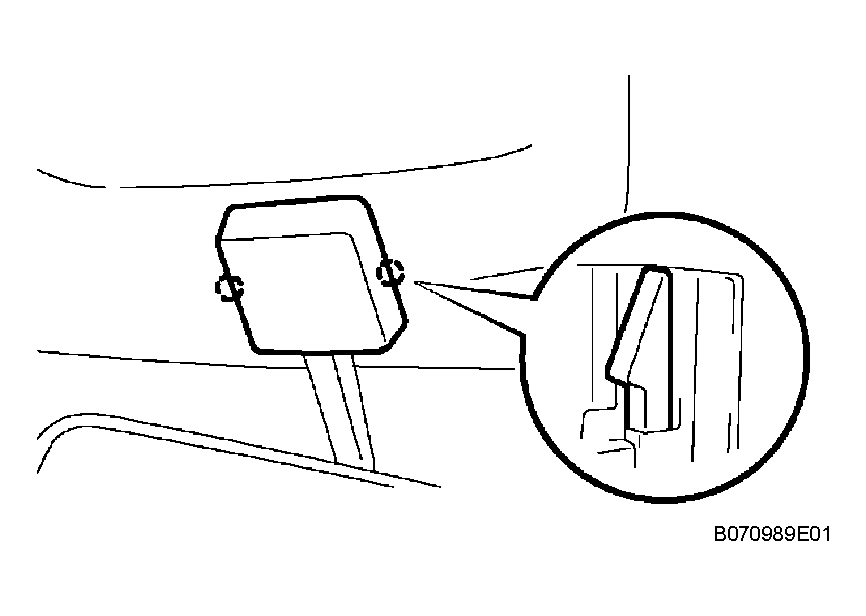

Home
>>
Scion
>>
2006
>>
xB Standard
>>
Repair and Diagnosis (Single Page)
>>
Body & Frame
>>
Mirrors
>>
Mirror
>>
Inner Rear View Mirror
>>
Installation
Inner Rear View Mirror: Installation
INSTALL INNER REAR VIEW MIRROR ASSEMBLY
Install the mirror with the 2 screws.
Install the mirror cover.
Fig 1: Installing Mirror With Screws

Courtesy of © TOYOTA, LICENSE AGREEMENT TMS1002